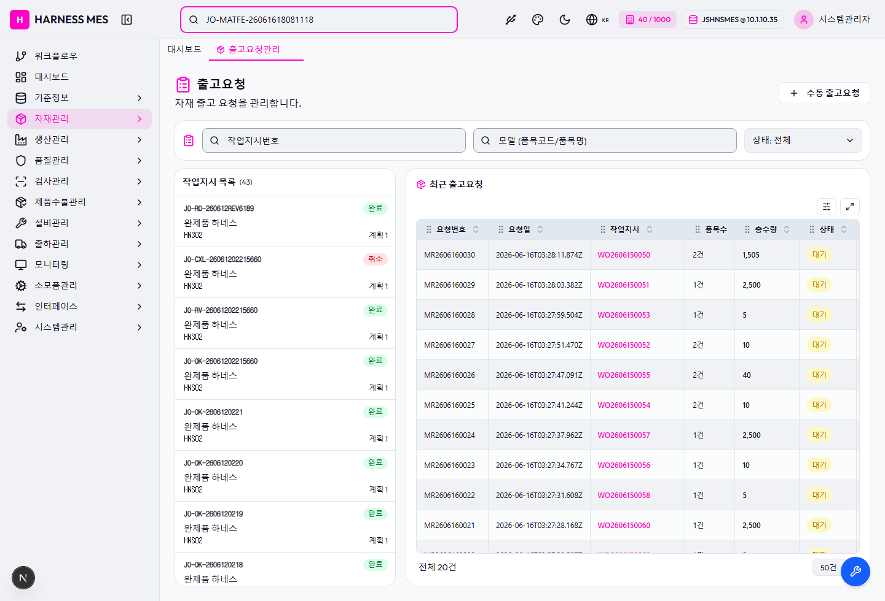
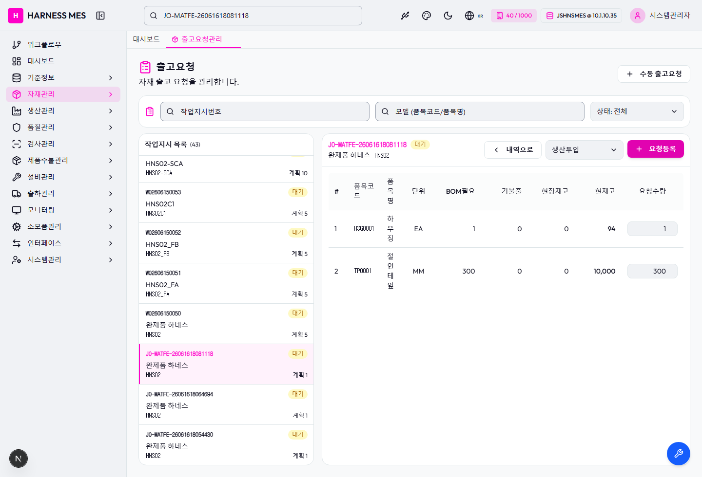
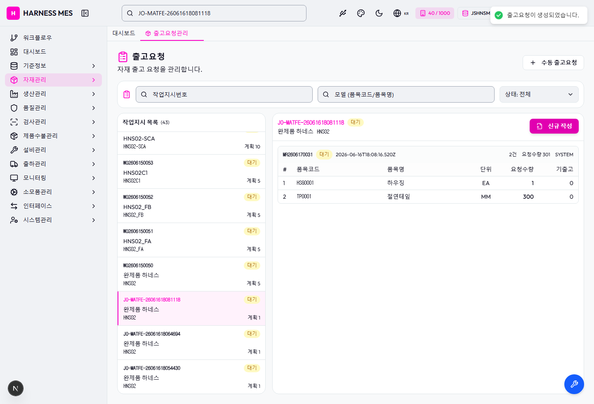
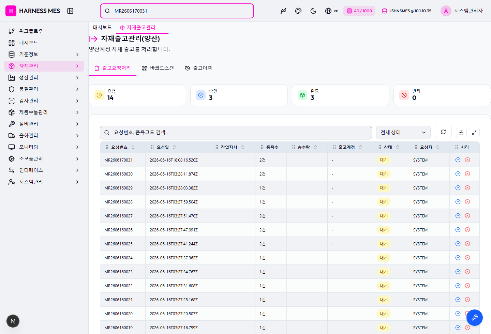

Scenario
| ID | 단계 | 결과 | 오류 |
|---|---|---|---|
| setup | 테스트 작업지시와 가용 LOT 확인 | PASS | |
| ui-request | 프론트 자재요청 생성 | PASS | |
| ui-issue | 프론트 승인 및 출고처리 | FAIL | page.waitForResponse: Timeout 30000ms exceeded while waiting for event "response" |
DB 확인
| 항목 | 결과 | SQL | Rows |
|---|
스크린샷



